Home
[Short Biography, Research Interests, Research Experience, Education ]
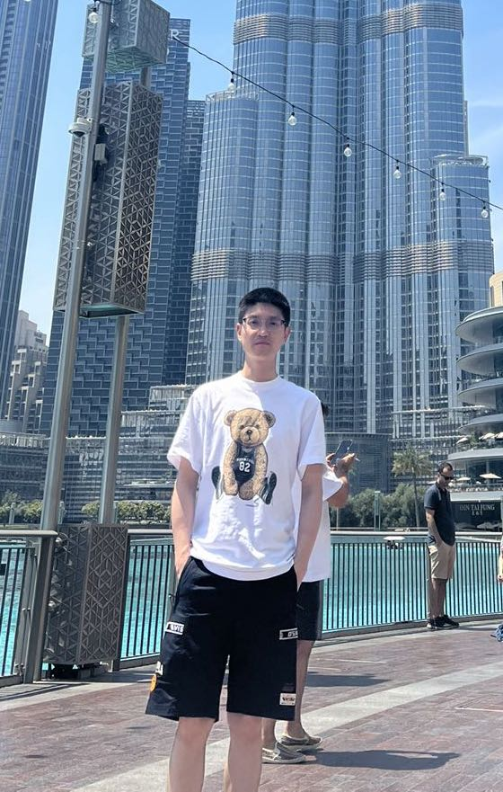 |
Fan Yang, Ph.D. Senior Scientist E-mail: fanyang_uestc@hotmail.com |


{kind=link}
News
-
💥 1 paper has been accepted by KDD2026.
-
💥 3 papers have been accepted by CVPR2026 (2 posters, 1 oral).
-
💥 1 paper has been accepted by AAAI2026.
-
💥 Elected as Senior PC of ICMR2026.
Short Biography
Fan Yang received the B.S. degree in software engineering from Southwest Petroleum University in 2010, and the Doctor’s degree in information and communication engineering from University of Electronic Science and Technology of China (UESTC), in 2018. He was a research intern with Microsoft Research Asia (MSRA). He was a research scholar in the department of computer science, University of North Carolina and also in the department of Radiology and BRIC, University of North Carolina. He was Research Associate in IIAI. Now, he is a senior scientist with AIQ, UAE. His research interests include computer vision, deep learning and medical image processing.
Research Interests
-
Computer Vision
-
3D Vision
-
LLM/VLLM
-
Generative Model
-
Medical Image Analysis
-
Machine learning
Research Experience
-
Senior Scientist (March 2020--Now)
AIQ, Abu Dhabi, UAE.
-
Research Associate (March 2019--March 2020)
Inception Institute of Artificial Intelligence, Abu Dhabi, UAE. -
Post Doctoral (August 2018--March 2019)
IDEA Research Lab in the Department of Radiology, University of North Carolina at Chapel Hill, NC, USA. -
Research Intern (September 2016--April 2017)
Microsoft Research Asia, Beijing, China.
Education
-
PhD. student (September 2012--June 2018)
School of Computer Science and Engineering,
University of Electronic Science and Technology of China, Chengdu, China.
Advisor: Professor Hong Cheng & Professor Jianping Li. -
M.S. student (September 2010--June 2012)
School of Computer Science and Engineering,
University of Electronic Science and Technology of China, Chengdu, China.
Advisor: Professor Jianping Li. -
B.S. student (September 2006--June 2010)
School of Computer Science,
Southwest Petroleum University, Xindu, China.
Major: Software Engineering.
Selected Publication
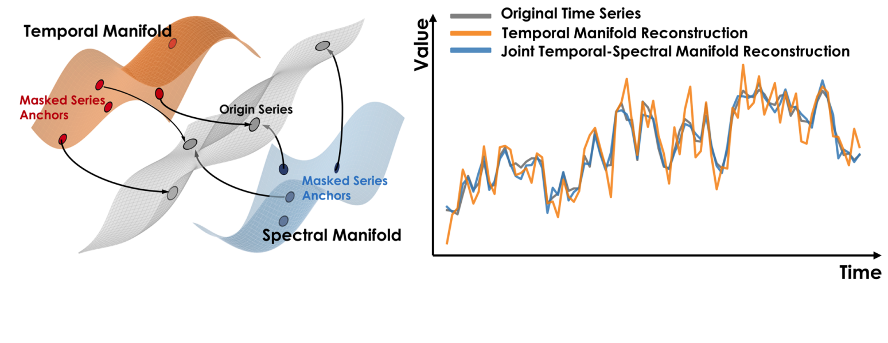 |
TS-MTM: Temporal-Spectral Masked Time-Series Modeling for Forecasting |
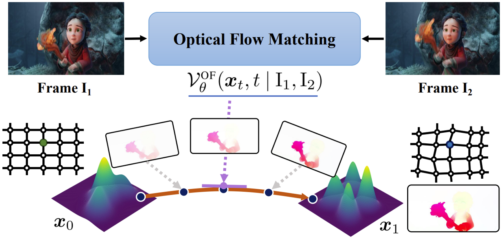 |
Optical Flow Matching: Reframing Optical Flow as Continuous Transport Dynamics |
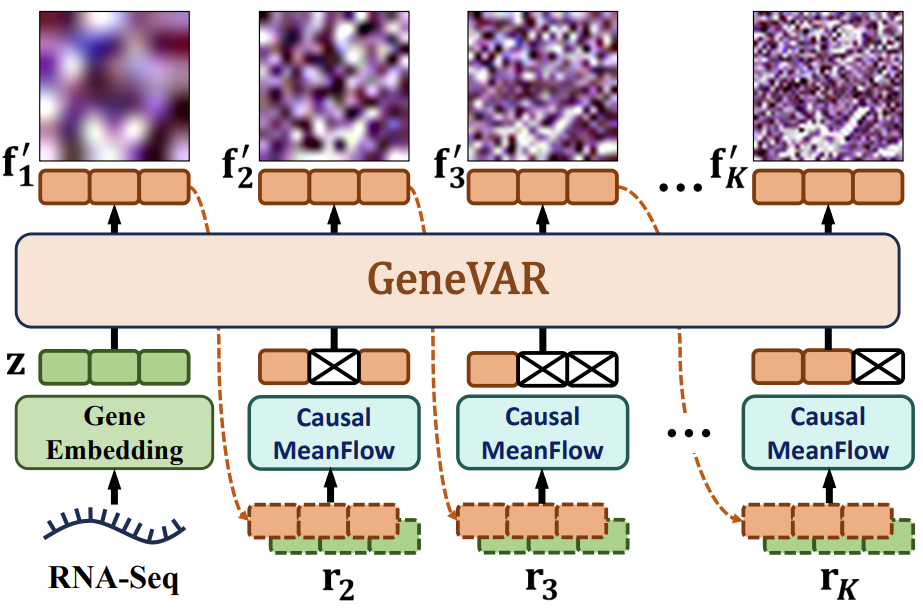 |
GeneVAR: Causal MeanFlow for Autoregressive Gene-to-WSI Tile Synthesis |
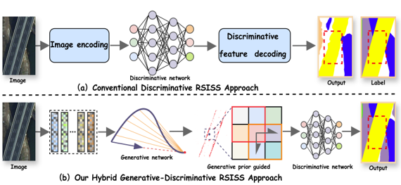 |
HySeg: Learning Generative Priors for Structure-Aware Remote Sensing Segmentation |
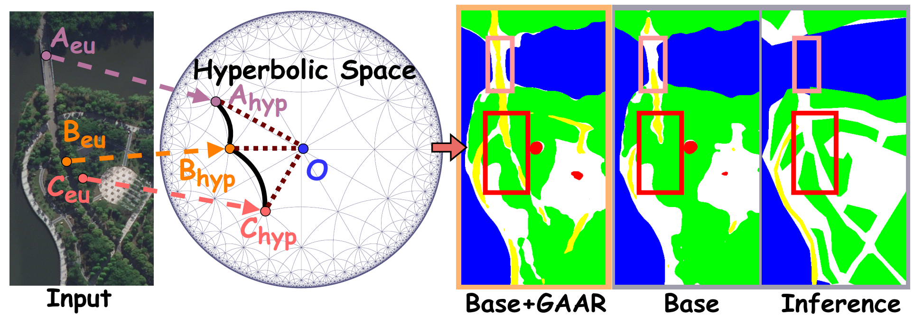 |
Beyond Euclidean Assumptions: Geometry-Aware Adaptive Routing for Remote Sensing Segmentation |
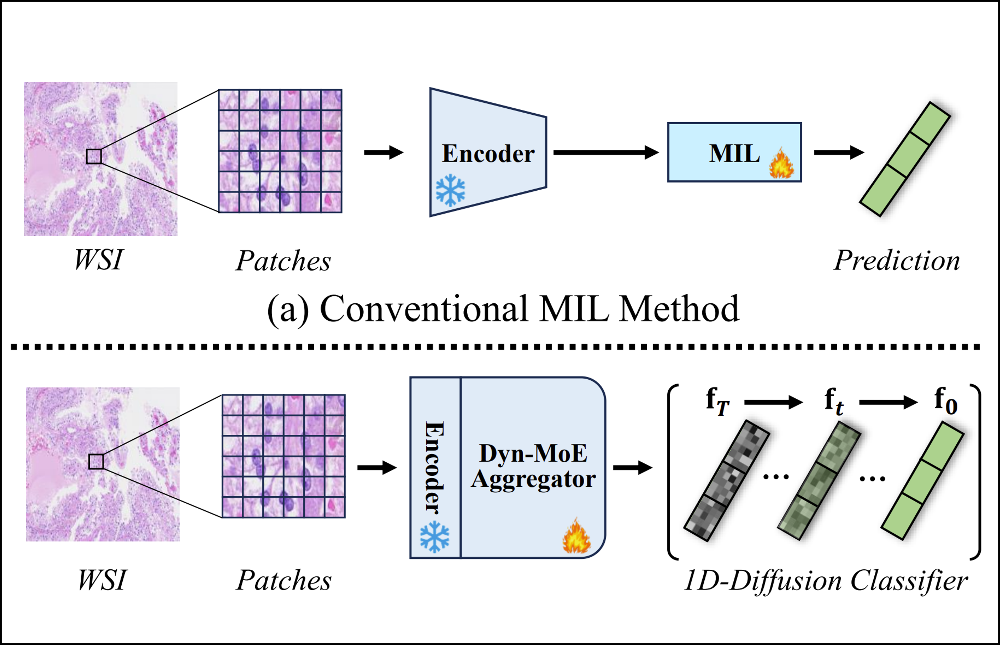 |
MExD: An Expert-Infused Diffusion Model for
Whole-Slide Image Classification |
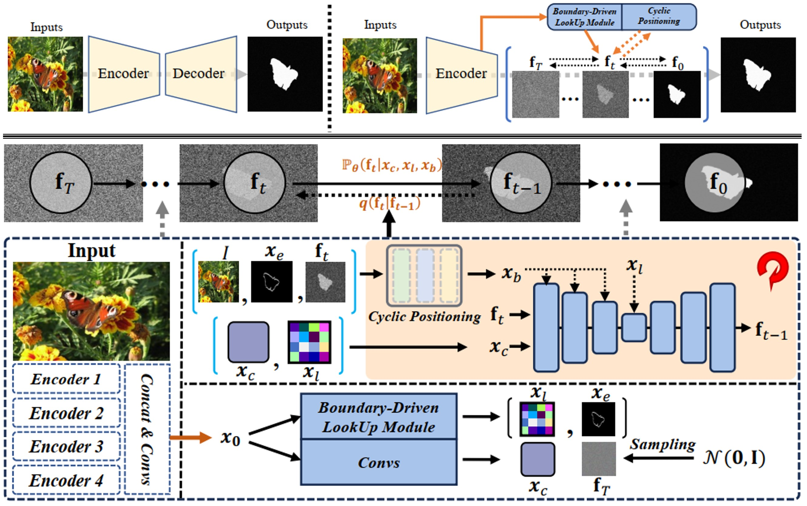 |
FocusDiffuser: Perceiving Local Disparities for
Camouflaged Object Detection |
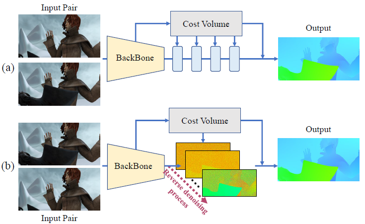 |
FlowDiffuser: Advancing Optical Flow Estimation with
Diffusion Models |
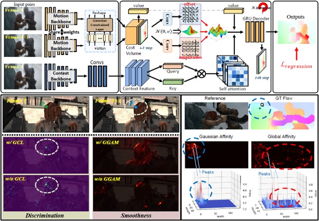 |
GAFlow: Incorporating Gaussian Attention into Optical
Flow |
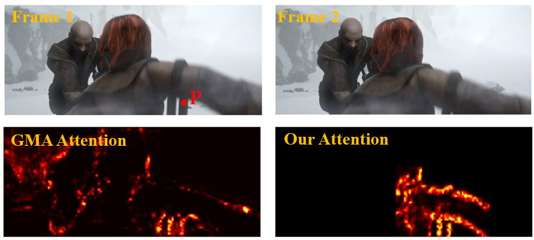 |
Learning Optical Flow with Kernel Patch Attention |
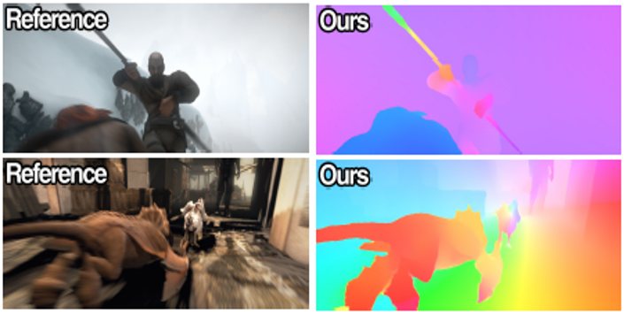 |
Learning Optical Flow with Adaptive Graph Reasoning |
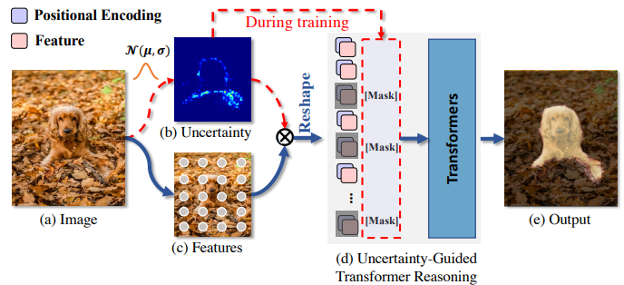 |
Uncertainty-Guided Transformer Reasoning for
Camouflaged Object Detection |
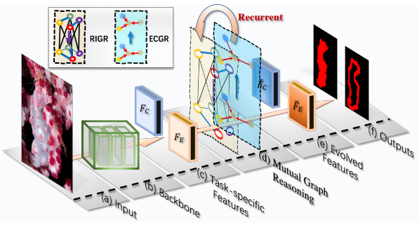 |
Mutual Graph Learning for Camouflaged Object Detection |
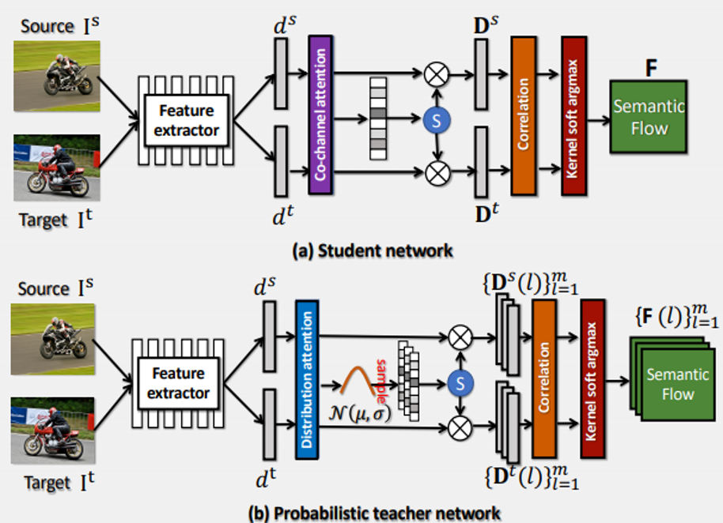 |
Probabilistic Model Distillation for Semantic
Correspondence |
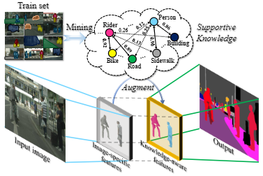 |
Robust Scene Parsing by Mining Supportive Knowledge
from Dataset |
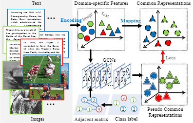 |
Exploring Graph-Structured Semantics for Cross-Modal
Retrieval |
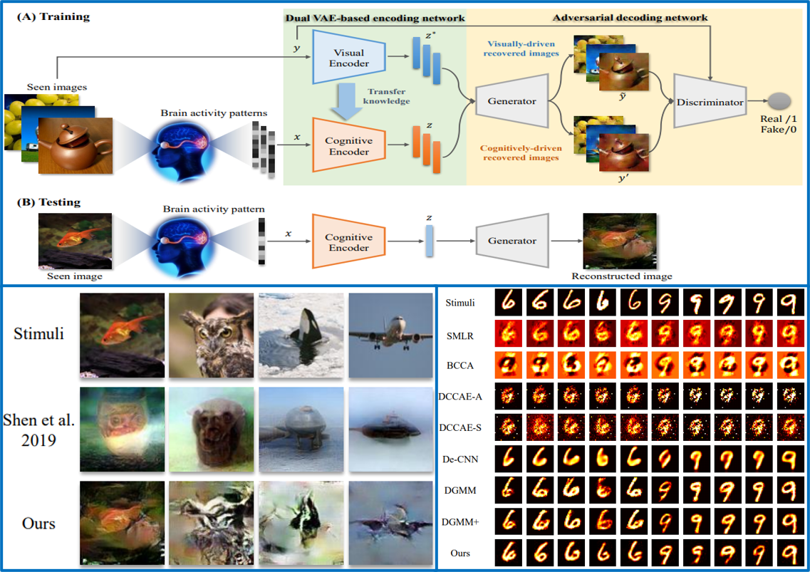 |
Reconstructing perceived images from brain activity by
visually-guided cognitive representation and adversarial
learning |
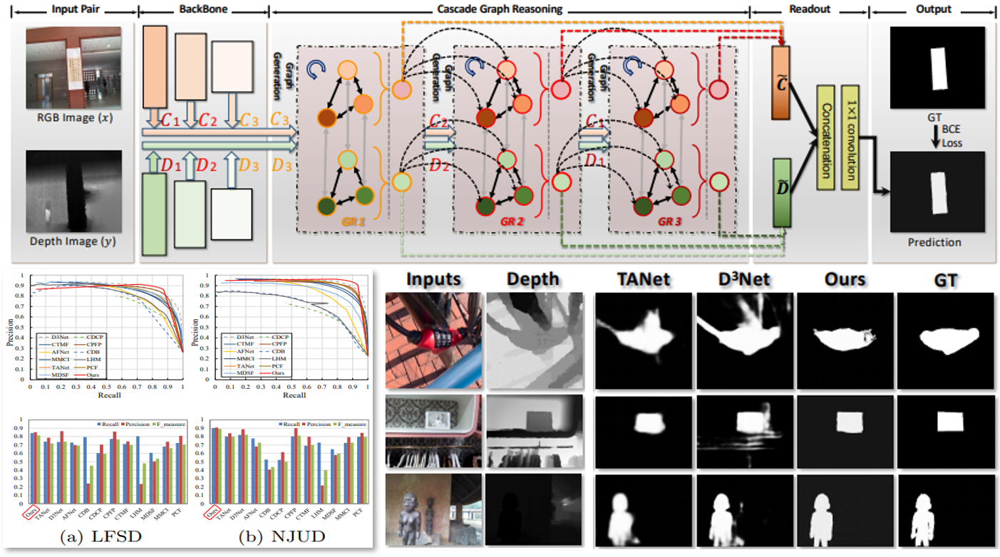 |
Cascade graph neural networks for rgb-d salient object
detection |
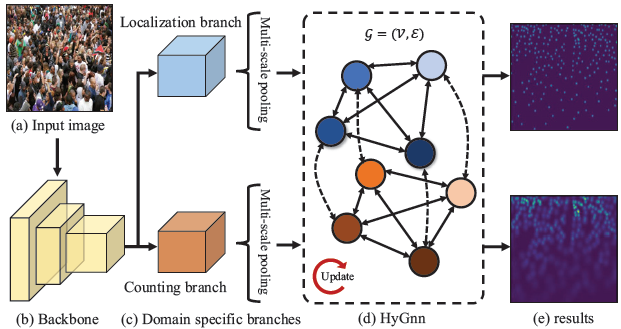 |
Hybrid Graph Neural Networks for Crowd Counting |
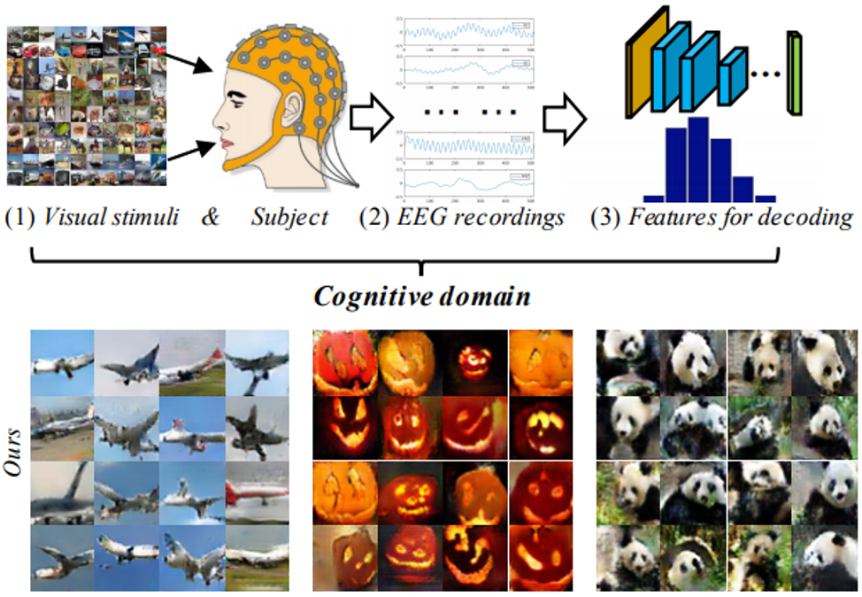 |
Decoding EEG by Visual-guided Deep Neural Networks |
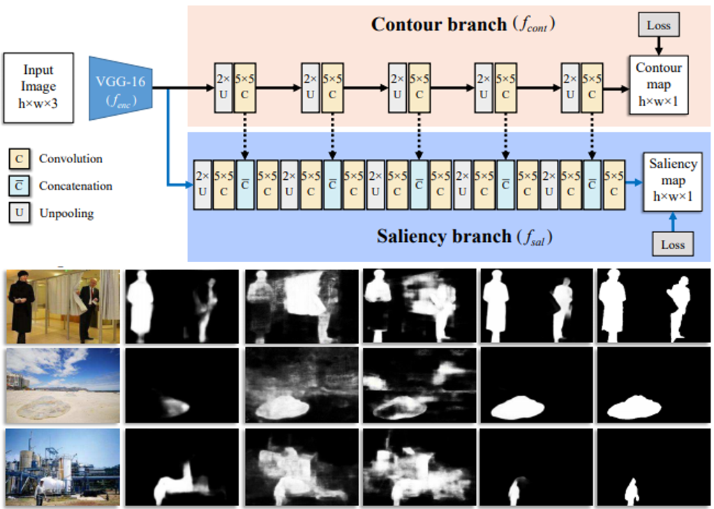 |
Contour Knowledge Transfer for Salient Object
Detection |
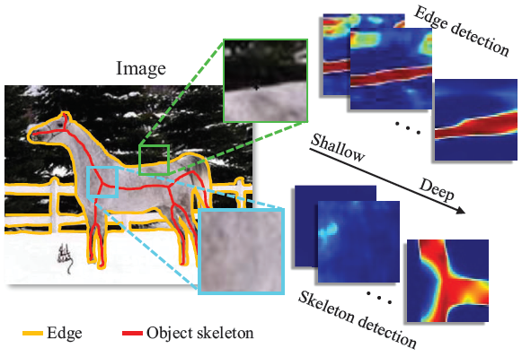 |
Multi-Scale Bidirectional FCN for Object Skeleton
Extraction |
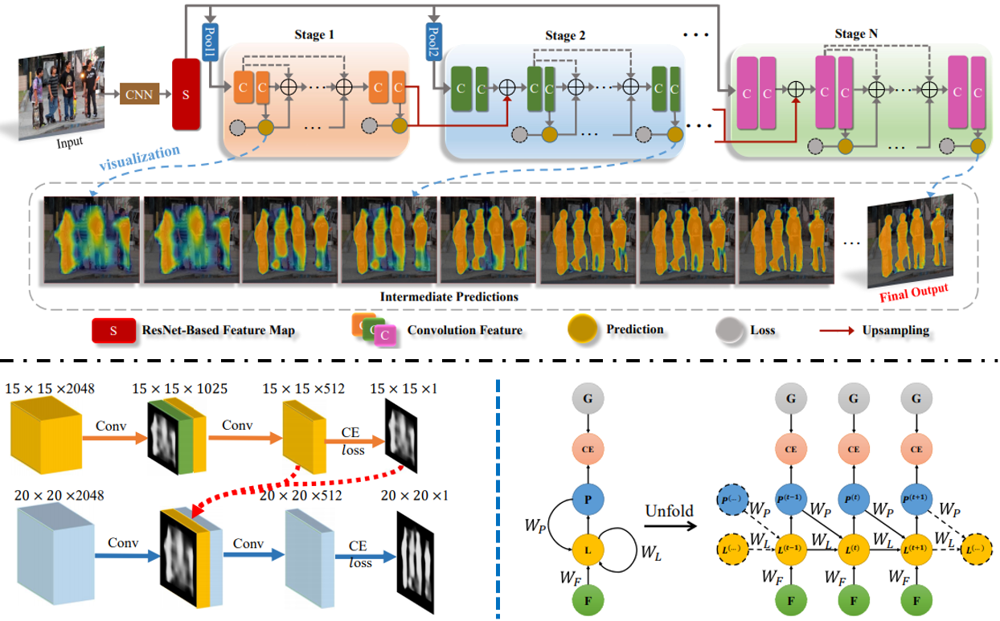 |
Multi-Scale Cascade Network for Salient Object
Detection |
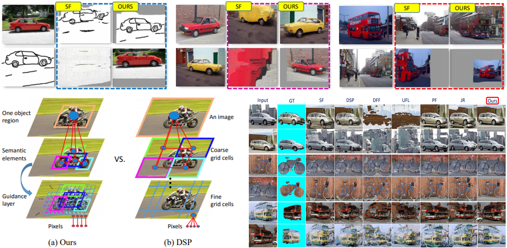 |
Object-aware Dense Semantic Correspondence |
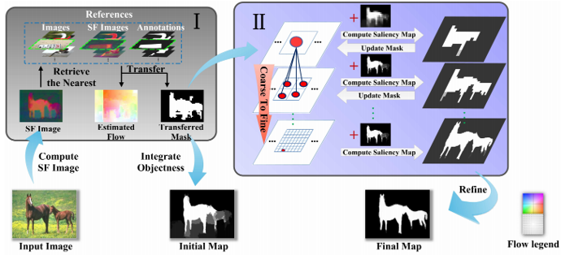 |
Saliency Transfer: An Example-Based Method for Salient
Object Detection |